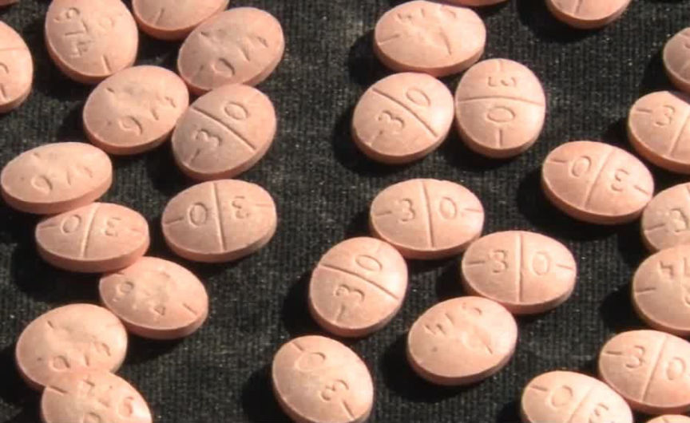
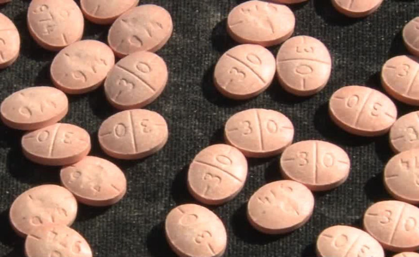

Florida Man Charged for Reselling Counterfeit Adderall Pills
Authorities in the Southern District of Florida charged a man suspected of distributing large quantities of counterfeit prescription pills.

According to court documents, Bradley Forrest Zucker resold large quantities of counterfeit Adderall and Xanax pills he purchased through the dark web.
The discovery of Zucker's drug trafficking operation resulted from the interception of one of his drug packages on September 26, 2023. A USPIS officer reportedly intercepted a suspicious package addressed to Zucker's residence. The investigators opened the package after a sniffer dog detected the presence of drugs. They found 1,275.4 grams of round orange pills.
On October 2, the investigators made a controlled delivery of the package after replacing the drugs with an inert substance and placing a tracking device in the package.
A USPIS officer left the package in front of Zucker’s residence after knocking and failing to receive a response. A few hours later, Investigators conducting surveillance observed a woman knock at the residence and leave with the package after failing to receive a response. The investigators located the woman and took her in for questioning.
On being questioned, she admitted she took the package as she assumed it contained drugs. She then told the investigators that she frequently purchased Adderall pills from Zucker. She also said that she had seen Zucker place three bags filled with Adderall pills in a safe during her most recent visit. She also claimed she had seen marijuana, Xanax, cocaine, and firearms at Zucker's home on multiple occasions.
The investigators later learned that Zucker had been admitted to a hospital and went to question him. On being questioned, Zucker allegedly admitted he had been reselling Adderall purchased from an undisclosed dark web drugs vendor.
He then told the investigators that he had marijuana and firearms inside his safe. He also told the investigators where they would find the key to open the safe.
The investigators executed a search warrant at Zucker's residence on the evening of October 2. In the safe, the investigators found 751.5 grams of counterfeit Adderall pills in a vacuum-sealed bag, 36.5 grams of Xanax pills, an undisclosed quantity of orange triangular-shaped pills imprinted "CP 30" and two handguns. In the bedroom, the investigators found ammunition and 45 grams of blue pills.
The counterfeit Adderall pills found in Zucker's safe tested positive for methamphetamine. Zucker was charged with possession and attempt to possess methamphetamine with intent to distribute and possession of a firearm in furtherance of a drug trafficking offense.
Zucker pleaded not guilty to the charges and will appear in court on January 8, 2024, for his trial.

Adderall pills
According to court documents, Bradley Forrest Zucker resold large quantities of counterfeit Adderall and Xanax pills he purchased through the dark web.
The discovery of Zucker's drug trafficking operation resulted from the interception of one of his drug packages on September 26, 2023. A USPIS officer reportedly intercepted a suspicious package addressed to Zucker's residence. The investigators opened the package after a sniffer dog detected the presence of drugs. They found 1,275.4 grams of round orange pills.
On October 2, the investigators made a controlled delivery of the package after replacing the drugs with an inert substance and placing a tracking device in the package.
A USPIS officer left the package in front of Zucker’s residence after knocking and failing to receive a response. A few hours later, Investigators conducting surveillance observed a woman knock at the residence and leave with the package after failing to receive a response. The investigators located the woman and took her in for questioning.
On being questioned, she admitted she took the package as she assumed it contained drugs. She then told the investigators that she frequently purchased Adderall pills from Zucker. She also said that she had seen Zucker place three bags filled with Adderall pills in a safe during her most recent visit. She also claimed she had seen marijuana, Xanax, cocaine, and firearms at Zucker's home on multiple occasions.
The investigators later learned that Zucker had been admitted to a hospital and went to question him. On being questioned, Zucker allegedly admitted he had been reselling Adderall purchased from an undisclosed dark web drugs vendor.
He then told the investigators that he had marijuana and firearms inside his safe. He also told the investigators where they would find the key to open the safe.
The investigators executed a search warrant at Zucker's residence on the evening of October 2. In the safe, the investigators found 751.5 grams of counterfeit Adderall pills in a vacuum-sealed bag, 36.5 grams of Xanax pills, an undisclosed quantity of orange triangular-shaped pills imprinted "CP 30" and two handguns. In the bedroom, the investigators found ammunition and 45 grams of blue pills.
The counterfeit Adderall pills found in Zucker's safe tested positive for methamphetamine. Zucker was charged with possession and attempt to possess methamphetamine with intent to distribute and possession of a firearm in furtherance of a drug trafficking offense.
Zucker pleaded not guilty to the charges and will appear in court on January 8, 2024, for his trial.